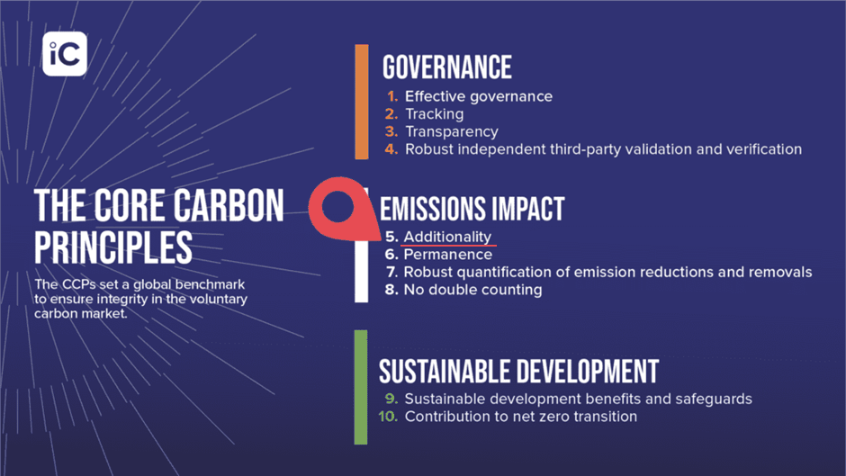
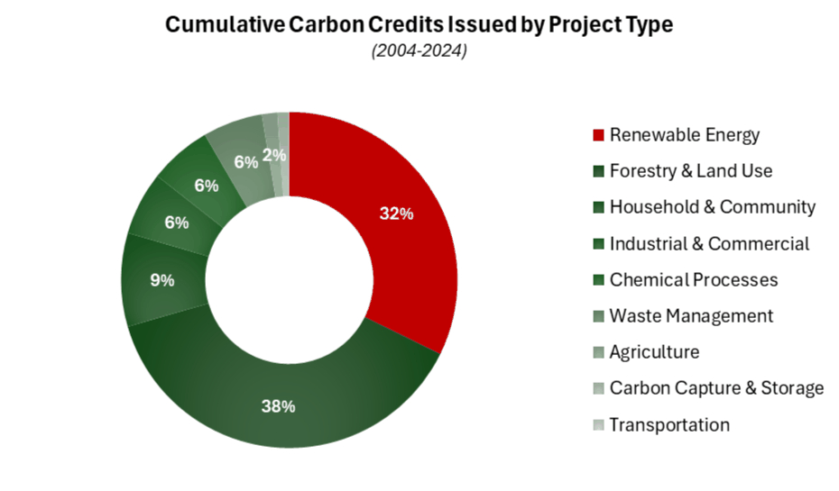
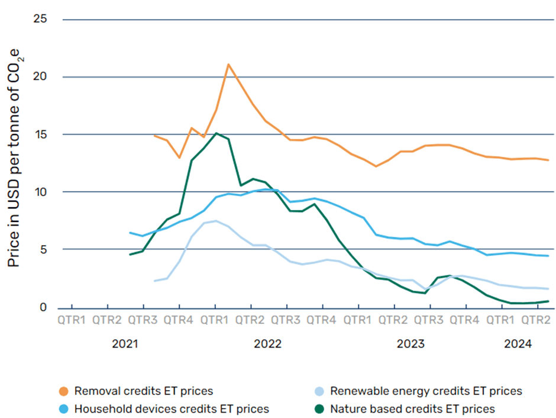
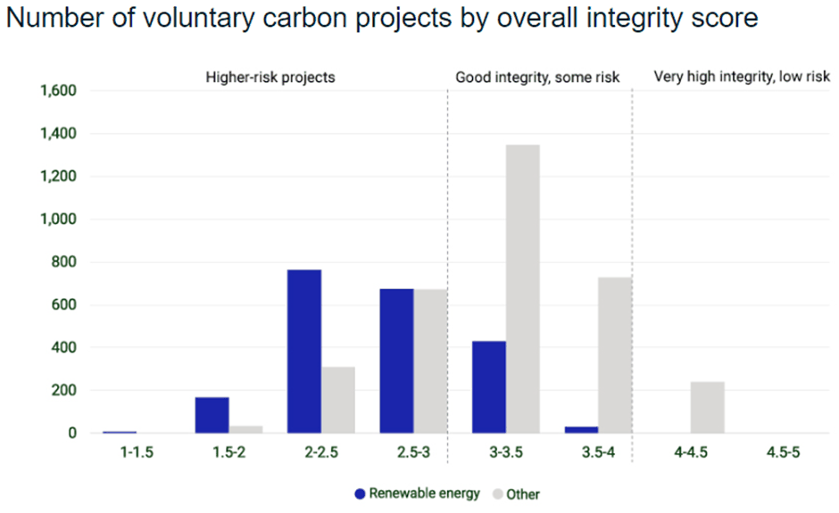

Energy Transition Watch: The Future of Carbon Credits and the Renewables Integrity Question
A reassessment of carbon credit strategy is underway and renewable energy is at the center.
On August 6th, 2024, the Integrity Council for the Voluntary Carbon Market (ICVCM) announced that renewable energy credits will not receive its Core Carbon Principles (CCP) label. For many institutional investors and sustainability-focused asset managers, this marks a significant shift.
Historically seen as a low-cost way to meet net-zero goals, renewable energy credits (primarily from wind, solar, and hydro projects) are now excluded from the voluntary market’s highest-integrity designation. The implications are particularly acute for sectors like commercial real estate, where carbon offsets have often supported broader emissions targets.
What does the ICVCM decision mean?
The CCP label is the ICVCM’s global benchmark for credit quality. To qualify, projects must demonstrate effective governance, measurable emissions impact, and clear contributions to sustainable development.

This visual outlines the ten CCP criteria, grouped under governance, emissions impact, and sustainable development. Notably, "additionality" - the requirement that a project would not have happened without carbon finance - is central to eligibility.
Renewable energy projects are now failing this test.
Why renewable credits fell short
As technology costs have declined, many renewable projects (especially large-scale wind and solar) are financially viable without carbon credit revenues. That undercuts the case for additionality and has led to widespread re-evaluation.
For example, a real estate investor sourcing offsets to claim operational carbon neutrality may now find those credits invalidated under the CCP framework. Even if they are still legally purchasable, their perceived quality, and their credibility with stakeholders, has materially changed.
A third of the carbon market under scrutiny

Since 2004, renewable energy credits have accounted for 32% of all voluntary carbon credits issued globally.
Renewables make up the second-largest share of issued credits after forestry and land use. The ICVCM decision thus affects a substantial slice of the voluntary carbon market.
Repricing risk: What history tells us
The financial consequences are likely to be significant. Renewable credits were already trading at a discount (averaging just $1.80 per tonne of CO₂e in H1 2024) and are now at risk of further devaluation.
Carbon Credit Exchange-Traded Prices by Type

The chart shows how prices for nature-based credits (green line) collapsed in 2022–2023 after investigative journalism and academic reviews highlighted quality concerns. These credits lost up to 90% of value from their peak in early 2022. That market precedent provides a cautionary example for renewables.
With investors now migrating toward credits that carry the CCP label, the spread between low-integrity and high-integrity credits may widen even further.
Integrity concerns: What the data says
Renewable energy credits are increasingly viewed as high-risk in terms of environmental credibility.

MSCI’s Carbon Markets team scores credits on a 1–5 scale. 78% of renewable energy projects score below 3, placing them in the “higher risk” category. This contrasts sharply with other project types, many of which have higher distributions in the 3.5–5 range.
This shift isn’t just academic, it affects how investors report, disclose, and defend their ESG strategies.
A warning for CRE sustainability planning
For commercial real estate, this presents both a reputational and operational challenge.
Renewable energy credits have been a common part of decarbonization plans, especially for hard-to-electrify assets or global portfolios with inconsistent grid performance. With CCP alignment now in doubt, those strategies must evolve.
Key considerations for CRE investors:
- Portfolio audit: Reassess the source, type, and certification of existing carbon offsets.
- Procurement standards: Prioritize credits with CCP labels or strong additionality arguments.
- Stakeholder communication: Be prepared to explain how offset quality is managed and adjusted as standards evolve.
- Budget impact: Prepare for potential cost increases if higher-integrity credits are required to replace discounted renewables.
What comes next?
This is not a wholesale dismissal of all renewable energy projects from the voluntary carbon market. The ICVCM left the door open for smaller-scale projects, those in emerging markets, or those using novel methodologies to potentially qualify in future iterations.
Meanwhile, new mechanisms such as the Energy Transition Accelerator (ETA) and the Coal to Clean Credit Initiative are being developed to better align carbon finance with decarbonization outcomes. These frameworks may eventually enable renewable projects to re-enter the high-integrity market, but under much more rigorous conditions.
Who is the ICVCM?
The Integrity Council for the Voluntary Carbon Market is a leading governance body tasked with setting standards for carbon offset quality. It plays a pivotal role in legitimizing voluntary markets, with the goal of reducing greenwashing risk and improving environmental outcomes.
Key institutional backers and leadership include:
- Chair: Annette Nazareth (former SEC Commissioner)
- Adviser: Mark Carney (UN Special Envoy and former Governor of the Bank of England)
- Sponsors: Rockefeller Foundation, Bloomberg Philanthropies
Its Core Carbon Principles (CCPs) serve as a high bar for market integrity, and are increasingly being adopted as a benchmark for procurement and investment decisions.
Outlook: Strategic repositioning, not retreat
Renewable energy credits are not obsolete, but they are under new scrutiny. For CRE investors, this is a moment to tighten frameworks, reassess exposure, and pivot toward the next generation of integrity-aligned solutions.
Carbon offsetting is evolving fast. As the market matures, credibility will depend not just on carbon accounting, but on the environmental integrity of every tonne. Staying ahead will require vigilance, adaptation, and better data.